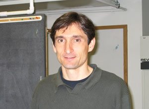
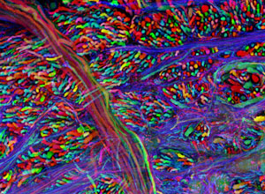

News Archives : 2008 : Beauty in the Brain of the Beholder
by Kristen Uekermann
February 25, 2008

Jean Livet  “Brainbow” Mouse Brain Stem. Montage of confocal images from a “Brainbow” transgenic mouse, genetically engineered to express combinations of red, yellow and cyan fluorescent proteins in neurons. In Brainbow mice, a scheme based on DNA recombination allows neurons to choose and express random combinations of the three fluorescent proteins, such that they each glow a particular color. This multicolor labeling provides a way to distinguish neighboring neurons and visualize brain circuits. The picture is from a section of the brainstem, showing large caliber axons of the auditory pathway. Laser scanning confocal microscopy, using a 40x 1.3 N.A. oil immersion objective.
|
|
Dr. Jean Livet, in the Jeff Lichtman lab at MCB, knows this first hand. Livet recently received first place the Olympus BioScapes Digital Imaging Competetion for his image of a “Brainbow” mouse brain stem. His image depicted different neurons in mouse brain circuits.
The Olympus BioScapes competition focuses on using images to communicate the incredible science unfolding in the world’s life science laboratories. Ten awards were given to images, image series or movies, all of life science subjects. All images had to depict subjects that are, or were at one time, living. Participants could use any kind of equipment, though a light microscope must have been used as part of the process.
Says Livet, “The observational side of science is often less acknowledged through publications than its experimental counterpart. Competitions and exhibits are a great way to help correct that imbalance. So I was very happy to win the Bioscapes award, which provided recognition of our efforts aimed at developing a new technique for observing neurons. This technique, Brainbow, which was developed in collaboration between the Lichtman and Sanes laboratories, helps to distinguish neurons in brain circuits by painting them with distinct colors. I hope it will be useful for us and others to better visualize neurons and their interactions in normal and diseased brains.”
The judges are experts in microscopy imaging and based their decisions on the uniqueness and importance of the science, new information revealed, aesthetic beauty and impact of the image and technical merit. About one thousand people compete each year, from many countries, submitting up to five entries each.
For his efforts, Livet was awarded Olympus products valued at $5,000 for himself and his collaborators. Livet has just finished his postdoctoral experience with the Lichtman lab and has accepted a young investigator position at “Institut de la Vision” (the Vision Institute), a new research facility scheduled to open in Paris at the end of February, which will host several groups working on visual system development and pathologies.